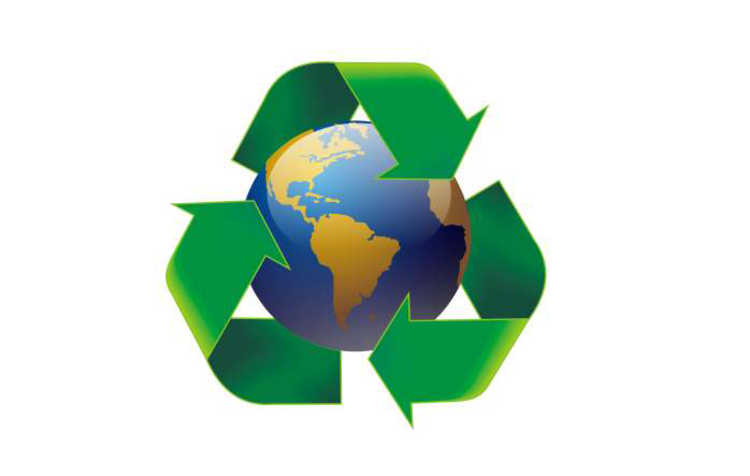
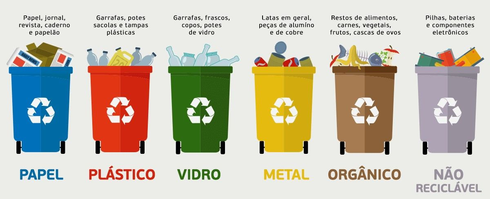

Apenas 1% das 15 000 toneladas de resíduos que a prefeitura recolhe diariamente são reciclados na cidade de São Paulo, muitos dizem ser perda de tempo, já que esses materiais serão jogados no mesmo caminhão e divididos só depois, em centros de triagem.
Todo o lixo fora do sistema é um problema ambiental e social. Gera contaminação do solo, da água, emite poluentes para a atmosfera e atrai doenças. Todo descarte fora da reciclagem se torna uma fonte poluidora. Segundo a Abrelpe, o descarte inadequado de resíduos sólidos nos chamados "lixões" causa prejuízos anuais de R$ 420 milhões para o Estado de São Paulo. O valor é referente aos gastos para tratamento de saúde e recuperação ambiente.
Com a atual situação de nosso estado, onde só quem realmente se importa com o futuro ajuda na reciclagem de lixo, resolvemos ser mais uma dessas empresas para somar as porcentagens de pontos de coleta.

Como participar da coleta?
Para reciclagem reserve na sacola bioplástica na cor verde apenas os resíduos destinados à coleta seletiva, como: papel, plástico, vidro e metais e disponibilize-o em até duas horas de antecedência da passagem da coleta na sua rua. Vale ressaltar que não é necessária a separação do material reciclável por tipo, pois os mesmos serão separados pelas cooperativas no momento da triagem.
Como deve ser a separação do lixo?
Passo a Passo
Para que o lixo doméstico produzido possa ser reciclado ele precisa ser, primeiramente, separado em casa. A tarefa de separar o lixo na própria residência é bem simples e pode trazer uma série de vantagens para os moradores, para a vizinhança e para o meio ambiente, principalmente.
1º passo:
Devemos separar todo o material que pode ser reciclado do que não pode, ou seja, vidros, papéis, plásticos e metais devem ser colocados em outro saco ou container de lixo. É importante lembrar que o lixo orgânico não deve ser colocado junto do lixo reciclável apesar de também pode ser reutilizado.
2º passo:
Todo o material reciclável, anteriormente separado, deve ser lavado e estar seco para que possa ser reciclado.
3º passo:
Com o material reciclável limpo e separado, basta depositá-lo em um local estratégico e diferente do local onde se deposita o lixo comum, para que seja fácil o recolhimento. Vale lembrar que fica muito mais prático colocar o lixo reciclável em um saco plástico transparente, tanto para quem recolhe quanto para quem separa o lixo.
Antes de colocar o lixo na calçada deve-se verificar o dia exato que a coleta seletiva de lixo faz o recolhimento no seu bairro.

Com esses simples passos podemos prolongar a vida de nosso meio ambiente e ainda tornar a cidade cada vez mais limpa e bonita.
Mas porque estamos falando isso tudo para você caro leitor?
Queremos mostrar um pouco do que acontece ao nosso redor, e mostrar a vocês que a falta de reciclagem tem grande impacto em nossa vida, e que pode acabar nos prejudicando e também o futuro de nossos filhos.